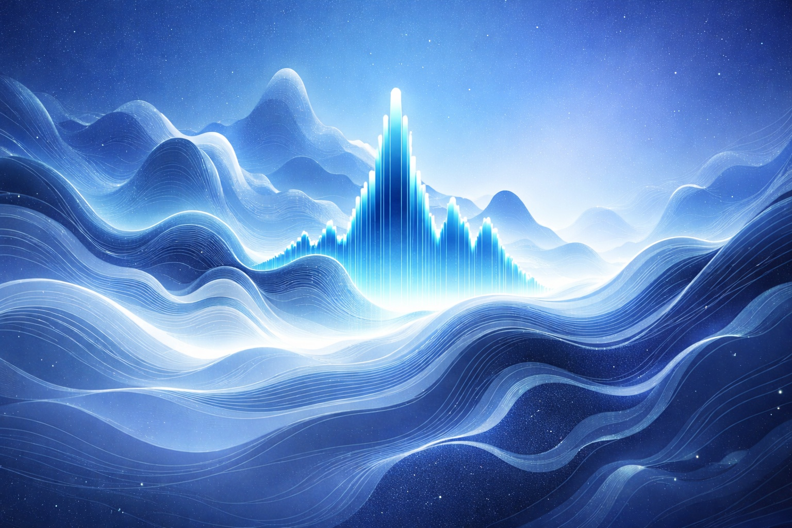
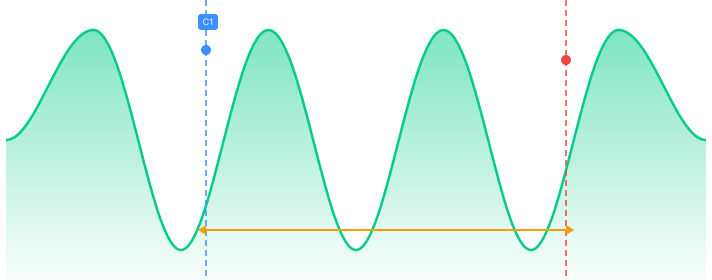
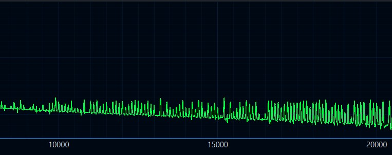
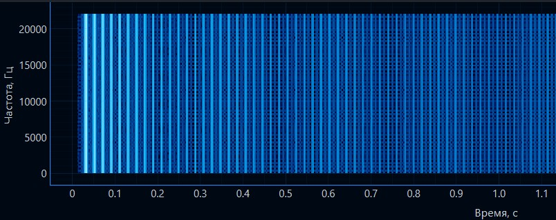
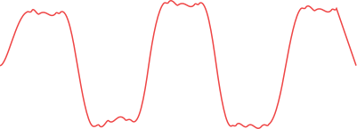
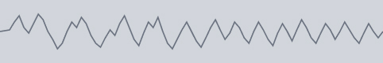
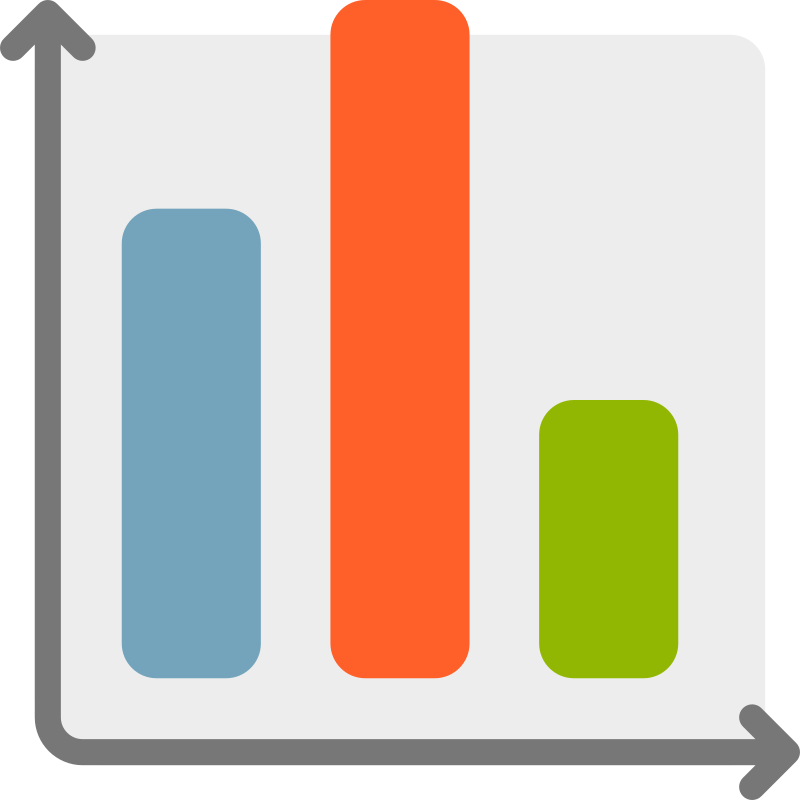
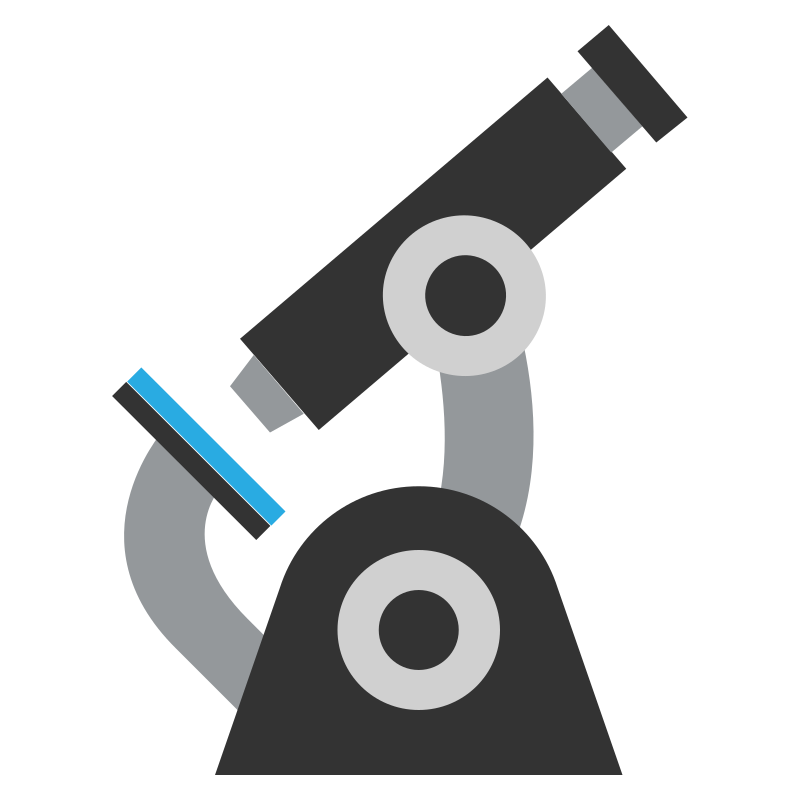
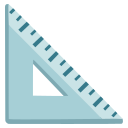

Посмотри, как Signal Studio упрощает работу с сигналами
1 минута — и ты поймёшь весь функционал
Временная область
Осциллограф
FFT-спектр
Частотная область
Спектрограмма
Время/частота

1. Выбери форму волны
Синус, меандр, пила, треугольник, шум, импульс или произвольный сигнал
2. Настрой параметры
Частота, амплитуда, смещение, фаза — интуитивный интерфейс
3. Анализируй результат
Осциллограф, FFT, спектрограмма — всё в реальном времени
Точные измерения двумя курсорами
Перетаскивай курсоры мышкой — измерения меняются в реальном времени

⊹ Перетаскивай курсоры
Перетаскивай курсоры мышкой — измерения меняются в реальном времени
Измерения в реальном времени
Vpp (размах)
3.24 В
Freq (частота)
1000 Гц
T (период)
1.00 мс
Δt (разница времени)
0.25 мс
ΔV (разница напряжения)
1.62 В
Анализируй спектр в деталях
FFT-анализ с настраиваемыми оконными функциями и спектрограмма
FFT-спектр

Синусоидальный сигнал
Спектр в дБ с выбором окна: Hann, Hamming, Blackman, Kaiser
Спектрограмма


Пилообразный сигнал
Спектрограмма с настройкой nperseg 4096
Очищай сигнал от шумов
Фильтры Баттерворта с настраиваемым порядком и частотой среза
ФНЧ
Фильтр низких частот
Пропускает низкие, срезает высокие
ФВЧ
Фильтр высоких частот
Пропускает высокие, убирает низкие
Полосовой
Полосовой фильтр
Выделяет полосу частот


Загружай, обрабатывай, сохраняй. Или работай в реальном времени
Полная поддержка WAV-файлов и захват аудио с микрофона
Анализатор WAV

Открывай любые WAV, выбирай канал (Левый/Правый/Оба), применяй фильтры, сохраняй результат
Захват с микрофона
Режим реального времени
Запись идёт...
Буфер
5 секунд
Обновление
50 мс
Частота дискретизации
44.1 кГц
Для студентов и начинающих
Встроенный учебник по работе с сигналами
Теория + Практика
Простым языком
Теорема Котельникова, фильтры Баттерворта, оконные функции — всё объяснено простым языком с примерами и графиками.
Нажми Ctrl+4 , чтобы открыть справочник

Теорема Котельникова
Почему частота дискретизации должна быть минимум в 2 раза выше максимальной частоты сигнала

Фильтры Баттерворта
Как работают ФНЧ, ФВЧ и полосовые фильтры. Что такое порядок фильтра и частота среза

Оконные функции
Зачем нужны окна Хэмминга, Хэнна, Блэкмана. Как они влияют на FFT-анализ
Спектрограмма
Как читать спектрограмму. Что показывает временная и частотная оси
Управляй одной рукой
Быстрый доступ ко всем режимам через горячие клавиши
Ctrl+1
Ctrl+2
Ctrl+3
Ctrl+4
F5
F1
Дополнительные комбинации
Ctrl+SСохранить результатCtrl+0Открыть WAV-файлSpaceСтарт/Стоп генерацииEscЗакрыть модальное окно
Начни работать за 1 минуту
Никакого Python, никаких библиотек. Готовый EXE-файл.
-
Без установки Python
-
Готовый EXE-файл
-
Все библиотеки включены
-
Запуск в один клик
Windows 10/11
~80 МБ
Версия 1.0